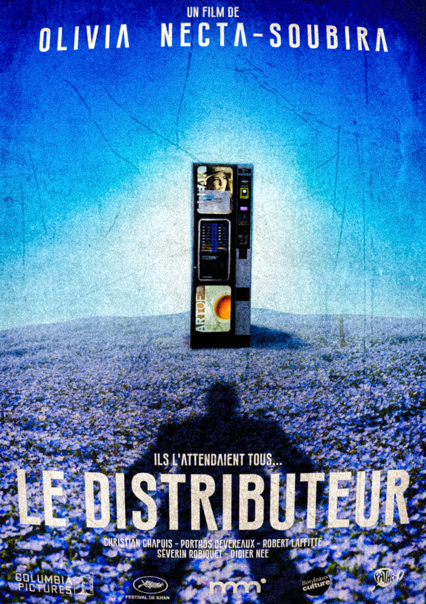

RÉALISATION
Jean-Pierre GACHAPON
Une mise en scène qui assume la tension, l’audace et le goût du beau geste.
ARCHIVES // DOSSIER 001
Un thriller qui transforme un objet du quotidien en source de tension, de rencontres et de cauchemars.
À consulter avec précaution.
Le distributeur vous regarde peut-être déjà.

01 // BANDE-ANNONCE
Le premier aperçu de LE DISTRIBUTEUR est classé dans ce dossier.
02
RÉALISATION
Une mise en scène qui assume la tension, l’audace et le goût du beau geste.
DISTRIBUTION
Les deux visages principaux de cette histoire sous haute tension.
EN SALLE
À découvrir dans les cinémas proches de chez vous.
03
« LE DISTRIBUTEUR est un film qui se veut fier de lui-même. C’est un film qui ose. C’est un film qui crie. C’est un film qui se veut discret. C’est un film qui s’assume. C’est un film que je ne regarderai qu’une fois, mais que je ne regarderai qu’une fois. »
« Je ne venais que pour voir l’acteur ou l’actrice du rôle principal, et je n’en suis pas déçu ! Hâte de voir la suite de sa carrière ! »
« La définition du film cliché. »
« Un bon film pour la sieste. »
« J’ai dû me retenir de ne pas me lever sur mon siège pour applaudir à la fin du film ! La tension est palpable et ce distributeur va vraiment hanter mes cauchemars pendant les cinq années à venir. Je recommande à 100 %. »
« Moi, si je devais résumer ma vie aujourd’hui avec vous, je dirais que c’est d’abord des rencontres, des gens qui m’ont tendu la main, peut-être à un moment où je ne pouvais pas, où j’étais seul chez moi. Et c’est assez curieux de se dire que les hasards, les rencontres forgent une destinée… »
« Film refait 100 fois mais qui fonctionne toujours bien. Point en plus pour le distributeur. »
« Mon portefeuille me dira merci car je n’utiliserai plus de distributeurs automatiques. Merci LE DISTRIBUTEUR ! »
« LE DISTRIBUTEUR est un bijou de tension pour son montage, sa musique et son audace narrative. Le film bouleverse les codes du thriller. »
« Une expérience à faire au moins une fois dans sa vie, je recommande fortement cette œuvre. »
« C’est officiellement mon thriller favori, je l’ai regardé au moins trois fois en salle. »
04
Dans tous vos cinémas proches de chez vous !
Jean-Pierre GACHAPON
John AUTOMATE et Kelly EYTIEM
Oui, cinq aux Oscars et une lors du Festival international du film de Berlin.